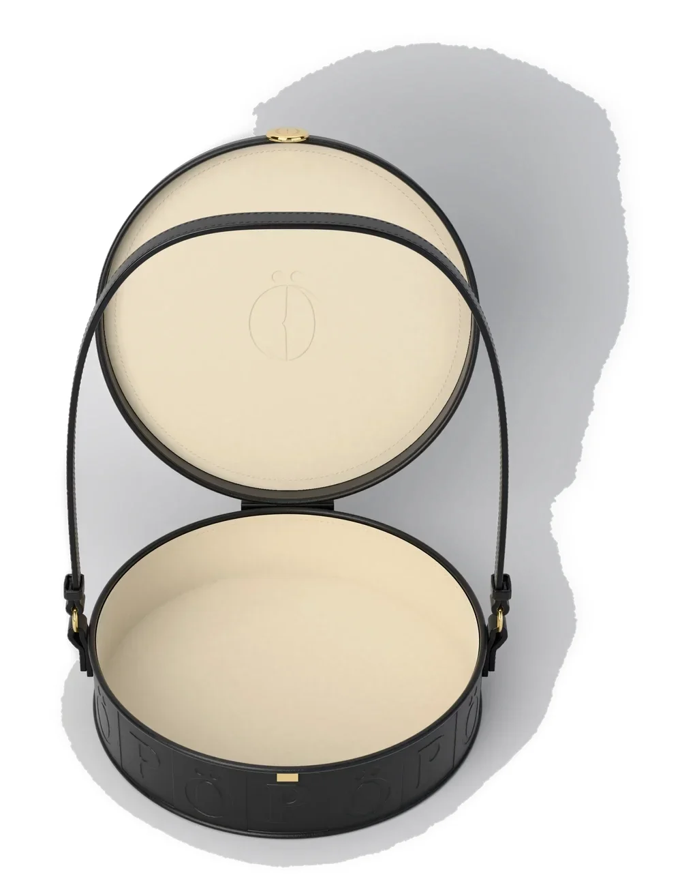
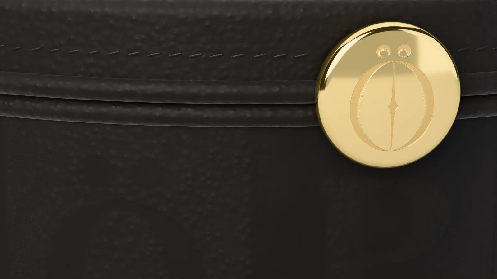
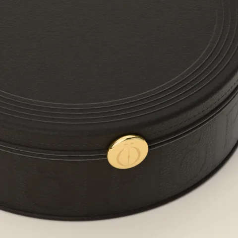
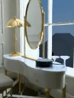

STAND-IN · img/voluta/three-quarter/master.* (three-quarter view, 8K; 8K, 7680 × 4320)
STAND-IN · img/voluta/three-quarter/master.* (three-quarter view, 8K; 8K, 7680 × 4320)
STAND-IN · img/voluta/open/master.* (open view, 8K; 8K, 7680 × 4320)
STAND-IN · img/voluta/detail-material/master.* (the calfskin, 8K close-up; 8K, 7680 × 4320)
STAND-IN · img/voluta/detail-clasp/master.* (the clasp, 8K close-up; 8K, 7680 × 4320) STAND-IN · img/voluta/detail-band/master.* (the pressed band, 8K close-up; 8K, 7680 × 4320)
STAND-IN · img/voluta/detail-band/master.* (the pressed band, 8K close-up; 8K, 7680 × 4320)Chapter I · Bags
Voluta
Round bag
A film can, kept in black calfskin. Round, closed by a brass clasp, the PÖ pressed into its band, and inside, cream suede where the reel would be.
- LEATHER
- BLACK CALFSKIN
- DIMENSIONS
- 22 × 7 CM
- LINING
- CREAM SUEDE
- CLASP
- BRASS
Price on request
ReserveMade to order. Delivery date confirmed by email.
Delivered in the house box.
Details
- Made to order
- Made to order. We email your delivery date once production is confirmed. Cancel for a full refund any time before production starts.
- Returns
- Exchanges within 14 days of delivery, unused and with tags. Returns
- Care
- Wipe with a soft dry cloth. Keep from rain and heat; if it gets wet, let it dry slowly away from a radiator. Store in its dust bag, stuffed with tissue, out of the light. Leather cleaning by a specialist only. Care
- Size
- The measurements

STAND-IN · img/voluta/world/master.* (C13: the last frame, the world plate (the suite’s vanity, morning); 8K, 5760 × 7680)Where it is going · C13
The suite’s vanity, morning
Two glasses, one poured.
On the screen in the film, the picture is tomorrow: each piece in the place it is going, with one place kept for someone.
The maker’s notes
Voluta, the Reel
- It begins as a circle of black calfskin: 22 cm across, 7 cm deep.
- Sixteen squares are pressed round the side band, 0.4 mm deep, each 43.2 by 44.9 mm.
- The lid is pressed with four fine rings and hinged at the back on a leather strip.
- It closes at the front on a round brass disc, 24 mm.
- The strap is 12 mm wide and folds through a brass ring on each side.
Inside it: cream suede, and the mark pressed 0.8 mm into the suede of the lid.
Read the poem